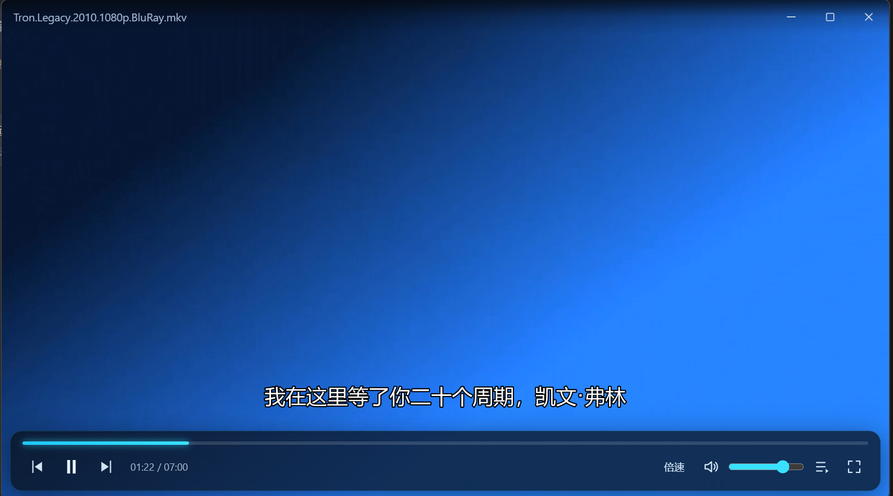
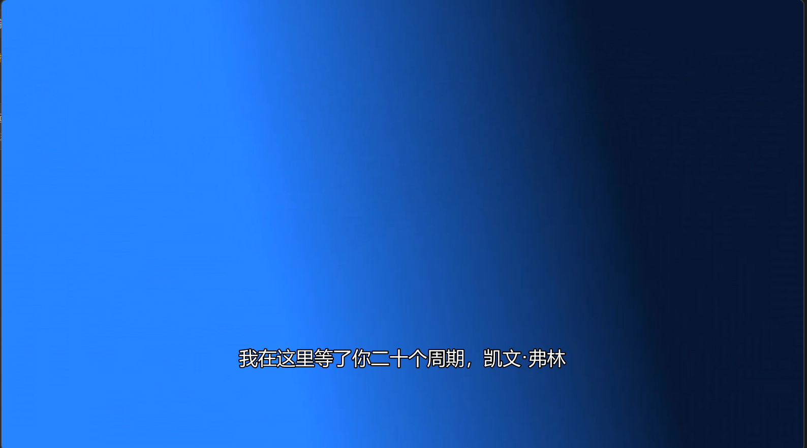
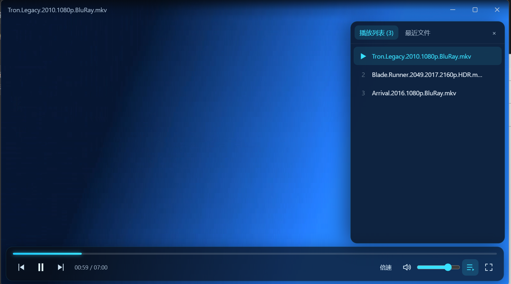

uuplayer 是一款参照经典 QQ影音 体验设计的本地视频播放器——内置 mpv + FFmpeg 8.x 内核，从 MP4、MKV 到 HLS、RTSP 网络流通吃。纯本地离线运行，无广告、无后端、不联网上报。

不堆功能，只把看视频这件事打磨到位。
MP4 / MKV / AVI / FLV / WMV / MOV，视频音频一把抓。解封装解码全部由内置 FFmpeg 完成，无系统解码器依赖。
贴上 URL 直接播。HLS、RTSP 等主流流媒体协议原生支持，追直播、看在线片源不用再开别的软件。
默认开启 --hwdec=auto-safe 硬件解码，高码率 4K 也流畅省电，老机器也能轻松带动。
多音轨、多字幕轨一键切换，外挂字幕模糊自动匹配（fuzzy），双击即载，追番看片不折腾。
打开文件 / 打开文件夹两个独立入口，支持多选批量导入；播放列表抽屉 + 最近播放记录，接着看不迷路。
看到名场面随手一截，画面即所得，存图分享都方便。
透明 WebView 悬浮于视频输出之上，控制栏、OSD、播放列表全部自绘——简洁，但不简陋。


成熟开源组件组合：解码交给 mpv，系统集成交给 Rust，界面交给 React。
透明 WebView 悬浮于视频画面之上，自绘标题栏、控制栏、OSD 与播放列表抽屉，mpv 属性变化实时驱动界面刷新。
负责 mpv 子进程生命周期管理、Win32 视频宿主窗口与 IPC 桥接，包体小、资源占用低，天然贴合 Windows。
解封装与解码完全基于内置 FFmpeg，支持几乎所有主流视音频格式及 HLS、RTSP 网络流，绿色便携免安装解码器。
Rust 在主窗口内创建 Win32 子窗口作为视频输出宿主，置于 z-order 底部
以 --wid 将宿主窗口句柄交给 mpv 子进程，视频直接渲染进窗口
通过 Windows 命名管道上的 JSON IPC 与 mpv 双向通信（控制 / 属性 / 事件）
属性变化经 Tauri command / event 实时广播到前端，界面所见即播放状态
免费 · 开源 · 离线可用 · Windows 10 / 11